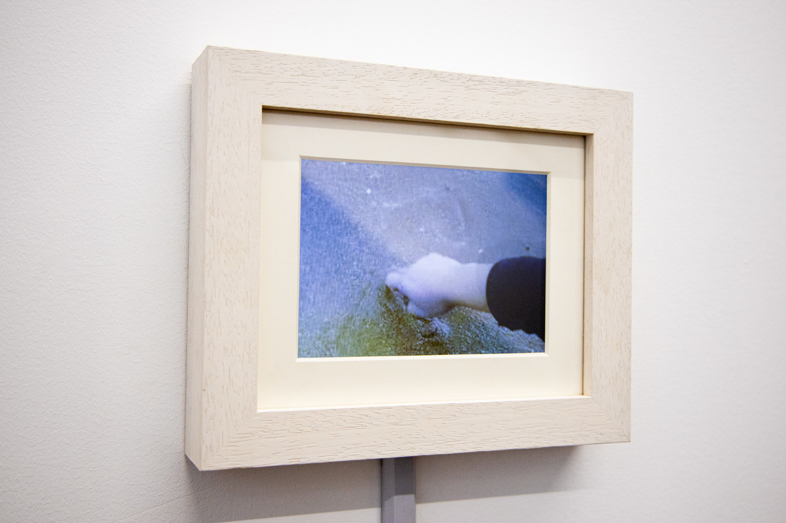
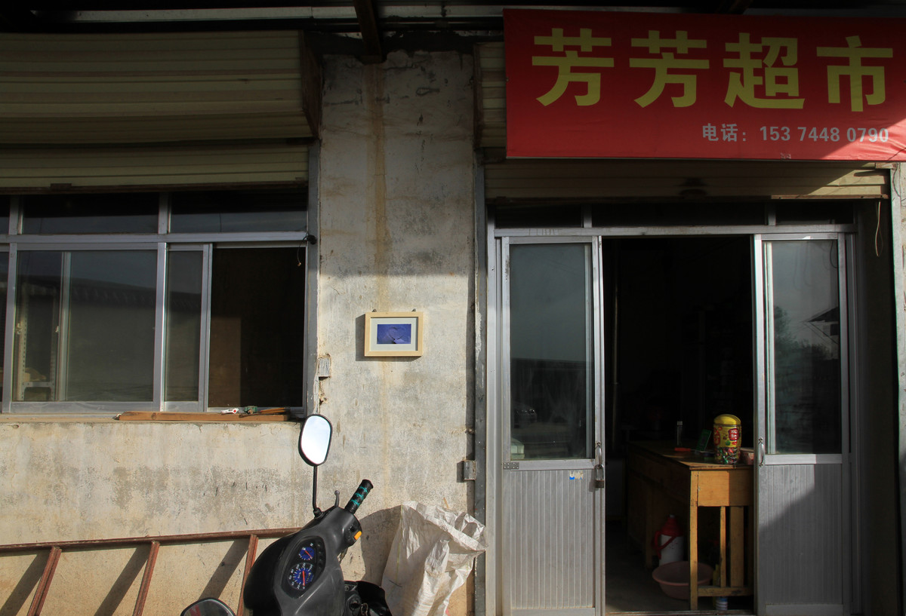
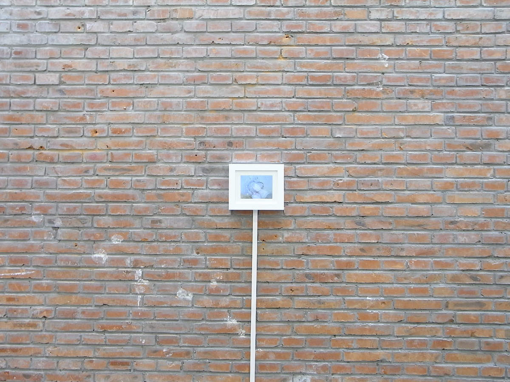
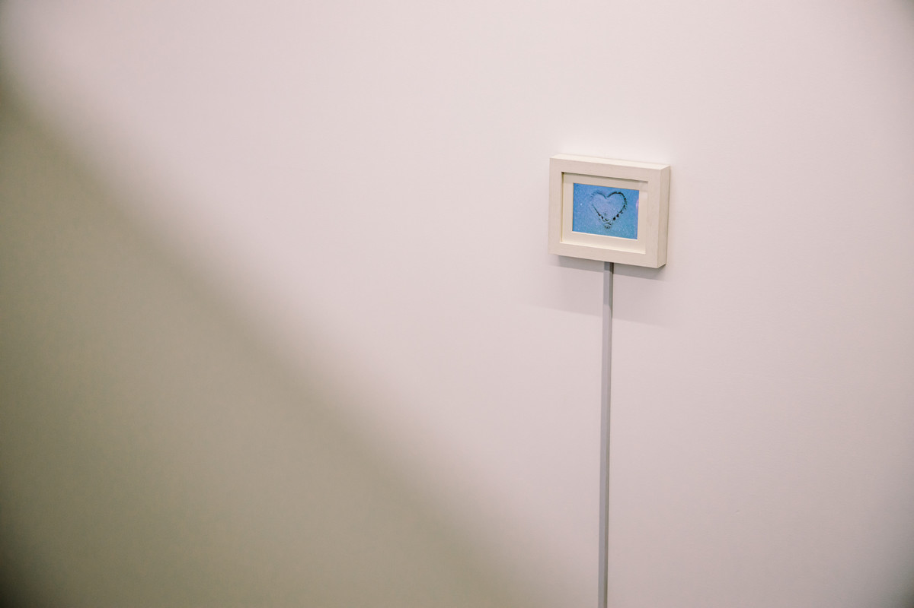

一千次抚平你的心 | A THOUSAND TIMES TO HEAL YOUR HEART

录像，10寸屏幕循环播放，11分钟，2011
Video, 10-inch screen, 11-minute loop, 2011
2011年夏天，我跟家人在海边散步，听到海浪声前赴后继不断拍打在海滩上，心生感慨，就创作了《一千次抚平你的心》。
In the summer of 2011, I was walking along the beach with my family when I heard the sound of waves beating on the beach one after another.

刘坪田园美术馆，秦安
Liuping Pastoral Art Museum, Qinan

荔空间，北京
Li Space, Beijing

牛房仓库，澳门
Ox Warehouse, Macau